In this post, we are going to deploy a Django App (the Oregon Engineering Transfer App) on Amazon Web Services (AWS). More specifically, we are going to deploy this Django web app on an AWS EC2 instance. An EC2 instance is AWS-speak for a virtual private server hosted by Amazon. This same type of virtual private server is available from other companies such as Digital Ocean and Linode. AWS calls virtual private servers EC2 instances.
Django is a Python package used to create Web Apps. Django can be used to create a simple one-page website, a web-based API service or a complex multi-page site.
An advantage of deploying our Django app on AWS, compared to Digital Ocean or Linode, is AWS has a free tier. The AWS free tier includes one EC2 instance (one server) for free for one year. Therefore, running our Django App on AWS should be free for a while (but don't forget that it's running...).
The deployment steps below are a slight modification of a procedure from Coding Dojo. Coding Dojo hosts coding boot camps to get programmers ready for jobs quickly. Their in-person coding bootcamps are 14 weeks long. The Coding Dojo bootcamps include Python, Django and Flask in the curriculum as well as other web development stacks.
A summary of steps to deploy our Django App on AWS is below:
- Sign up for Amazon Web Services (AWS) account
- Update requirements.txt and push to GitHub
- Create and log into the AWS instance
- Update the server
- Install packages with apt
- Clone the GitHub repo
- Install virtualenv
- Create a new virtual environement
- Install Python packages
- Install gunicorn, bcrypt and django-extensions
- Modify settings.py
- Collect Static
- Test gunicrn
- Create gunicorn.service file
- Run gunicorn service
- Create nginx configuration
- Link the nginx configuration and restart nginx
- View site at Django app with a web browser
- Why this is not a permenent solution
Sign up for Amazon Web Services (AWS) account
Sign up for an Amazon Web Services (AWS) account here:
Once you sign up for an account, you have to go to your email and activate your AWS account. After your account is active, log into the AWS Console by browsing to aws.amazon.com and clicking the [Sign into Console] button on the upper right.
Once signed in, you are greeted by the ASW Managment Console:
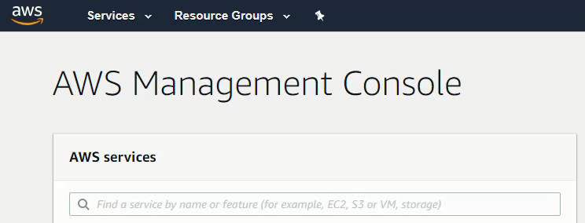
Update requirements.txt and push to GitHub
Back at the local machine, open the Anaconda Prompt and activate the (transfer) virtual environment. Then cd into the transfer project.
Use pip freeze to create a requirement.txt file. On Windows, the command pip freeze > requirements.txt was needed. Note the > character in the middle of the command. The requirements.txt file contains all the Python packages used in the (transfer) virtual environment.
Later, we will install these same Python packages on the AWS server.
$ conda activate transfer
(transfer)$ cd transfer
(transfer)$ pwd
/home/Documents/transfer
(transfer)$ ls
courses/ docs/ pages/ templates/
db.sqlite3 LICENSE README.md transfer_project/ manage.py* users/
(transfer)$ pip freeze > requirements.txt
Take a look at the requirments.txt file. Ensure the file contains Django, django-crispy-forms and django-bootstrap. A partial listing of the requirements.txt file is below:
certifi==2018.10.15
Click==7.0
Django==2.1.2
django-crispy-forms==1.7.0
Jinja2==2.10
livereload==2.5.2
...
We also need to modify the .gitignore file. We need to make sure the env/ directory isn't saved up on GitHub or copied directly from GitHub to our EC2 instance. Open the .gitignore file and add env/ on it's own line at the bottom of the file. This addition will ensure that the virtual environment we create on the server does not get saved in our git revision history.
# .gitignore
# Ignore the entire env directory
env/
Save the .gitignore file. Add, commit and push the changes to GitHub.
(transfer)$ git add .
(transfer)$ git commit -m "updated requirements.txt"
(transfer)$ git push origin master
Do a quick check that the Django project runs without errors and works as expected on your local machine.
If the Django project doesn't run on your local machine, there is no way the Django project will work on the AWS cloud server. Start the development server on the local machine with the command below:
(transfer)$ pwd
# make sure manage.py is in the current working directory
(transfer)$ python manage.py runserver
Django version 2.1.2, using settings 'transfer_project.settings'
Starting development server at http://127.0.0.1:8000/
Quit the server with CTRL-BREAK.
Point a web browser to:
See your Django app running in all it's glory:
Use [Ctrl]-[c] to shut down the development server.
The following tasks are now complete:
requirements.txtcreated- changes pushed to GitHub
- the Django App runs locally as expected with no errors
Now close the Anaconda Prompt. We'll use the Git Bash terminal (instead of the Anaconda Prompt) later in the deployment.
Create and log into the AWS instance
Log into the AWS Web Console at the following link:
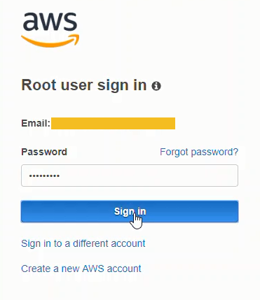
In the AWS Console window select Service → Compute → EC2 → Launch Instance.
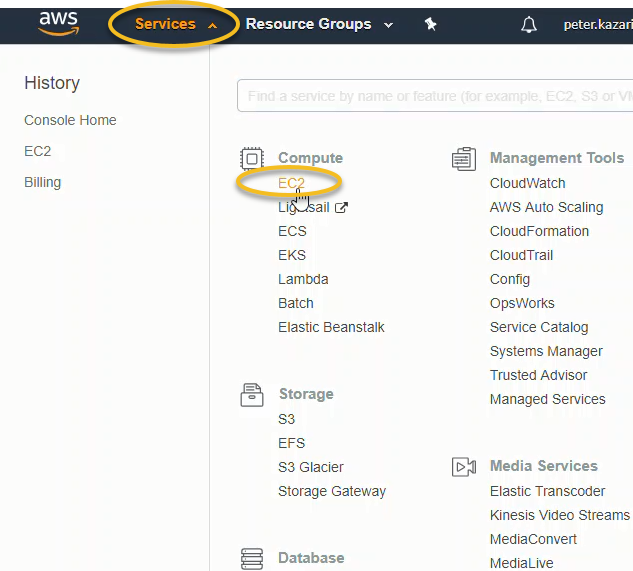

Scroll down the operating system options and select Ubuntu Server 16.04 LTS (HVM), SSD Volume Type. This option is part of the AWS free tier.
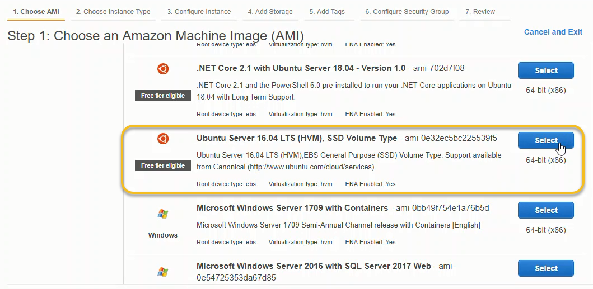
Choose [select] then [Review and Launch].
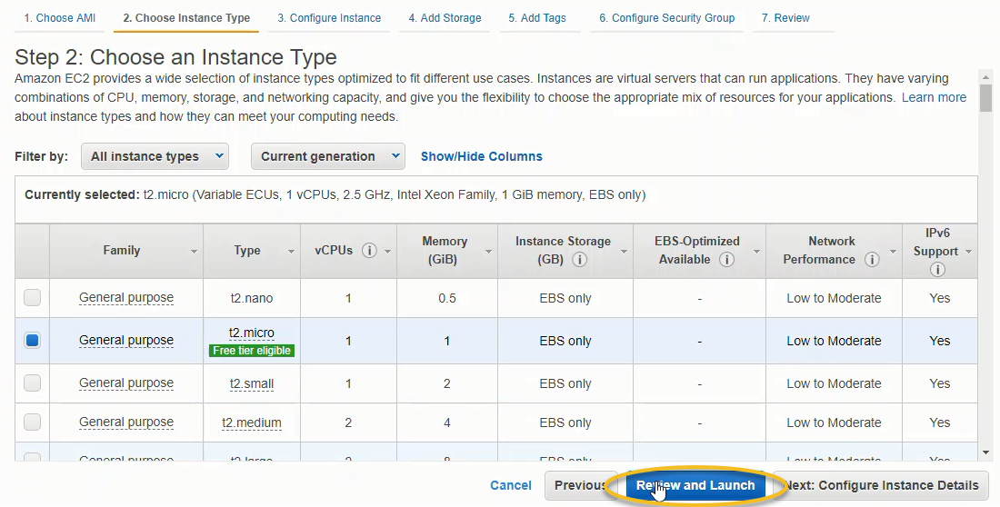
Before we [Launch] the final server, we need to edit the security group options. Scroll down and select [Edit Security Groups]
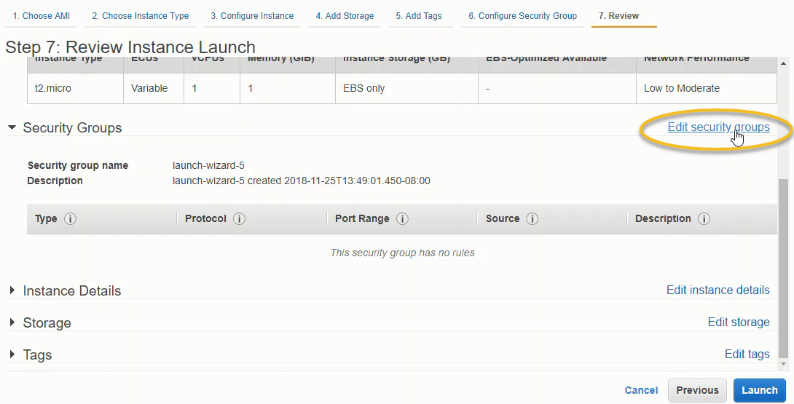
Add the following security options:
- SSH - your personal IP, auto-populates
- HTTP - Anywhere, all IPs
- HTTPS - Anywhere, all IPs
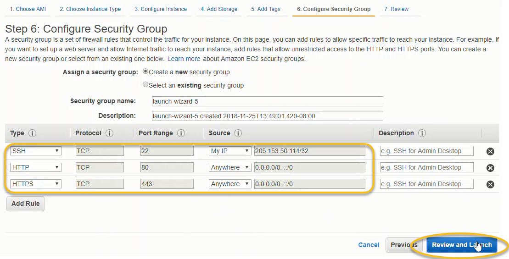
After the three security rules are added, click [Review and Launch]
At the review screen, click [Launch]
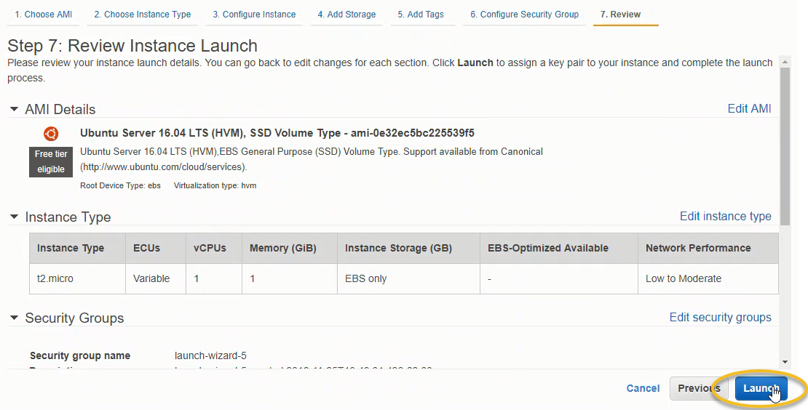
In the pop-up window, select [Create a New Key Pair] from the dropdown menu.
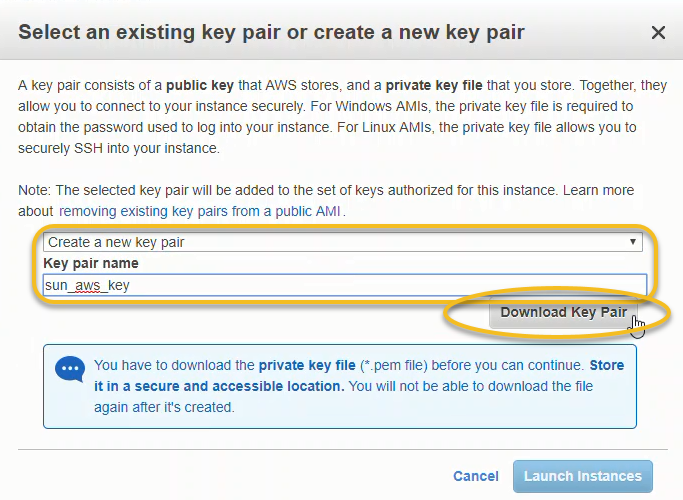
Move the .pem key from the Downloads folder to a known location. Note the location where the .pem key file was moved to. We will need to cd into that location to log into the server.
Finally, click the [Launch Instances] at the bottom of the pop-up box.
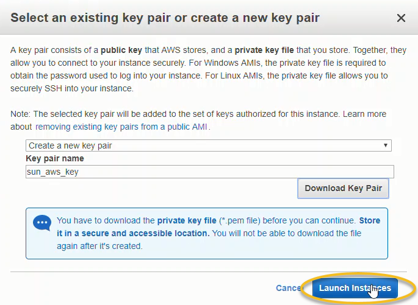
This produces a status window that shows our instance is launching. It takes a minute or two for the instance to launch.
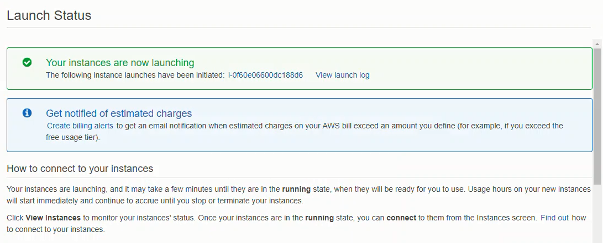
Scroll down and click [View Instances].
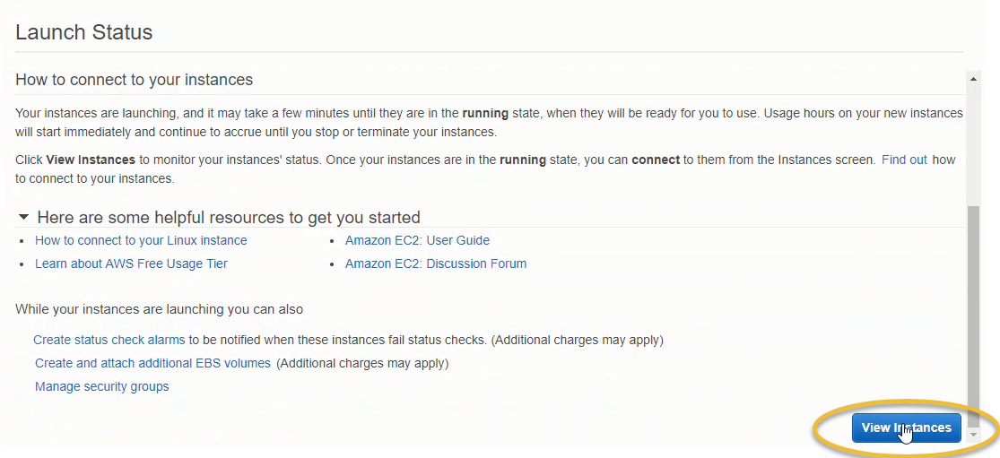
You can change the instance name by clicking the pencil icon in the [name] field.
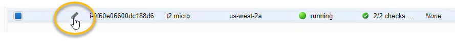
Select the instance (box to the left of the instance name turns blue when instance is selected) and click [Connect]
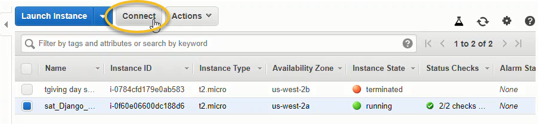
Copy the SSH connection command from the pop-up window. We will run this command in the Git Bash prompt.

Open the Git Bash Prompt, and cd into the directory where the .pem file we downloaded earlier is saved. Run the ls command and make sure the .pem file downloaded earlier is present.
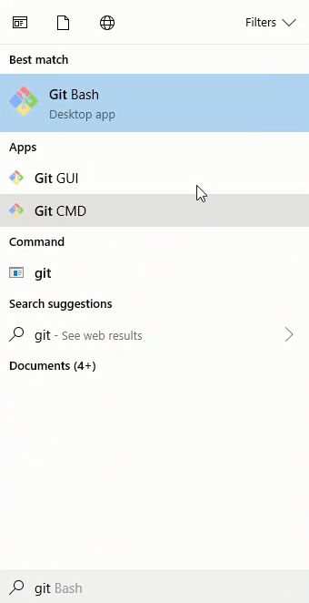
Copy the SSH login command from the AWS console pop-up window into the Git Bash Prompt. The right mouse button can be used to paste.
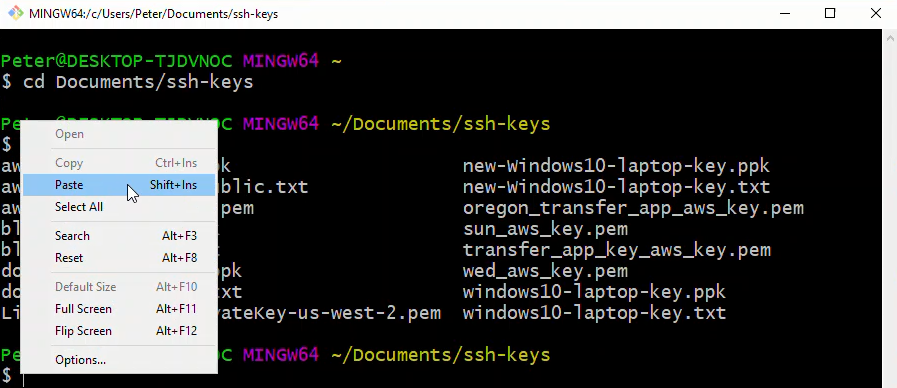
Enter yes at the prompt to connect.
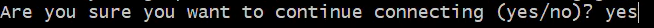
You will see the terminal prompt for the AWS server in the command window. Type the pwd command to print the current working directory. You should be in the /home/ubuntu directory.
# on server
$ pwd
/home/ubuntu
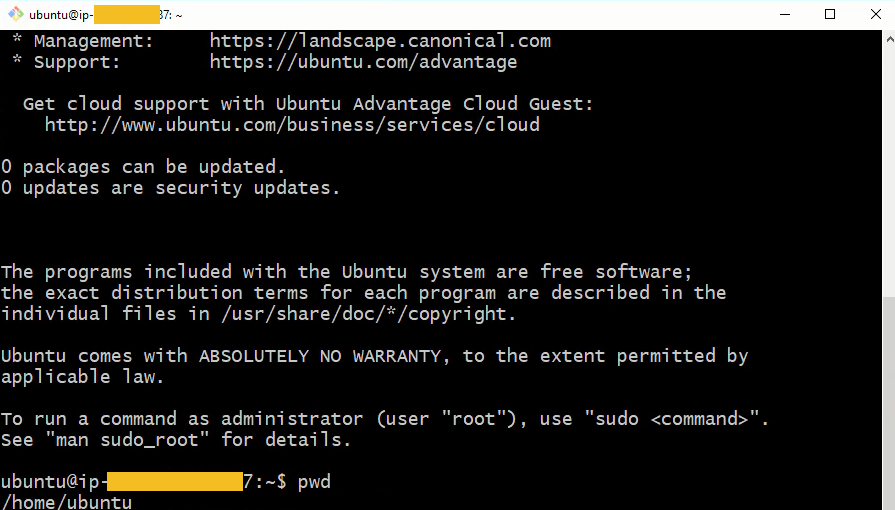
We have now completed the following steps:
- launched a new AWS EC2 instance
- logged into our new AWS EC2 intance with Git Bash
Update the server
After the AWS server is created, the operating system and installed packages on the server should be updated. Run the following commands in the Git Bash window
$ sudo apt-get update
$ sudo apt-get upgrade
When asked What would you like to do about modified configuration file grub? Type 1 to choose install the package maintainer's version
After all the operating system and installed packages are upgraded, run the command sudo apt-get update again. You should see that updates are 100 percent complete.
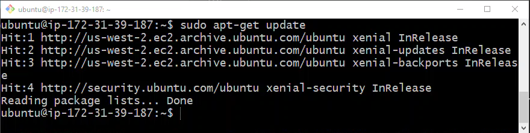
Install packages with apt
Now that the server and the server's installed packages are up-to-date, we can install the packages we need to get the Django app up and running. Run the following commands:
$ sudo apt-get install python-pip python-dev nginx git tree curl wget
Type y to confirm the installation. After the packages are installed, run apt-get upgrade again to make sure the packages we installed are all up-to-date.
$ sudo apt-get upgrade
Clone the GitHub repo
Next, we'll clone the GitHub repo that contains our Django project. Note the repo_name directory name is spelled out after the url. This means the contents of the GitHub repo will be placed in a directory called repo_name. If this is omitted, the contents of the repo will go into a directory called Oregon-Engineering-Transfer-App. That's a long directory name to type. repo_name is easier to type and will hopefully cut down on errors later in the deployment process.
$ git clone https://github.com/ProfessorKazarinoff/Oregon-Engineering-Transfer-App.git repo_name
$ ls
repo_name
Install virtualenv
We will run our Django app with Python3, not legacy Python (version 2.7). We'll install virtualenv with pip so that we can create a virtual environment for our Django App to run in.
$ sudo pip install virtualenv
Create a new virtual environement
With virtualenv installed, we can cd into the repo_name directory and create a new virtual environment called env that contains Python3. Then we'll activate the virtual environment with source env/bin/activate. Note that when the virtual environment is activate, the environment name (env) is shown before the command prompt.
$ cd repo_name
$ ls
manage.py requirements.txt
$ virtualenv env --python=python3
$ source env/bin/activate
(env)$
Install Python packages
Make sure the (env) virtual environment is activate and we are in the repo_dir base directory that contains the requirements.txt file. Install all of the Python packages in one go with pip install -r requirements.txt.
(env)$ pwd
/home/ubuntu/repo_name
(env)$ ls
courses env pages templates
deployment-notes LICENSE README.md transfer_project
docs manage.py requirements.txt users
(env)$ pip install -r requirements.txt
Make sure all the packages in the requirements.txt file are installed without an error. If there is a problem, you may need to remove a package that was conda installed that can't be installed by pip.
The packages we need are below. When these are pip installed, the terminal should output Requirement already satisfied
(env)$ pip install django
(env)$ pip install django-crispy-forms
Install gunicorn, bcrypt and django-extensions
We need a couple of extra Python packages for our Django deployment on AWS. Install them with pip. Make sure the (env) virtual environment is active when the pip install command is run.
(env)$ pip install gunicorn
(env)$ pip install bcrypt django-extensions
Modify settings.py
Next we'll modify the settings.py file in the repo_name/transfer_project directory.
(env)$ cd transfer_project
(env)$ ls
__init__.py settings.py urls.py wsgi.py
(env)$ nano settings.py
Add the AWS instance IP address to the allowed hosts, set debug to False.
#transfer_project/settings.py
...
DEBUG = False
ALLOWED_HOSTS =['aws instance IP address']
At the bottom of settings.py add a line for the static root file path:
# At the bottom of /transfer_project/settings.py
STATIC_ROOT = os.path.join(BASE_DIR, "static/")
[Ctrl]-[x] and [yes] to save and exit.
Collect Static
Now we'll copy the static files into the directory we specified in the STATIC_ROOT setting of the settings.py file. We'll also migrate the database with the makemigrations and migrate commands.
(env)$ cd ~/repo_name
(env)$ python manage.py collectstatic
(env)$ python manage.py makemigrations
(env)$ python manage.py migrate.
Test gunicrn
Next we'll test that gunicorn can work with our Django app. When the --bind command is run, you should not see any errors. Type [Ctrl]-[c] to exit.
(env)$ gunicorn --bind 0.0.0.0:8000 transfer_project.wsgi:application
# should see no errors
Now deactivate the (env) virtual environment. After deactivation, there should no longer be an (env) before command prompt
(env)$ deactivate
$
Create gunicorn.service file
We are going to run gunicorn as a system service. To run gunicorn as a system service, we need to create a systemd configuration file.
$ sudo vim /etc/systemd/system/gunicorn.service
Fill out the gunicorn.service file as below. Note you need to type i in the vim text editor to enter "insert" mode. Type [Esc] to go back to command mode. The command to write and quit is :wq.
[Unit]
Description=gunicorn daemon
After=network.target
[Service]
User=ubuntu
Group=www-data
WorkingDirectory=/home/ubuntu/repo_name
ExecStart=/home/ubuntu/repo_name/env/bin/gunicorn --workers 3 --bind unix:/home/ubuntu/repo_name/transfer_project.sock transfer_project.wsgi:application
[Install]
WantedBy=multi-user.target
Run gunicorn service
Now we'll run the gunicorn system service. Type the following commands. After the status command, you should see Active: active (running) in the Git Bash window. If you see Failed then something is wrong with the gunicorn.service file created earlier.
$ sudo systemctl daemon-reload
$ sudo systemctl start gunicorn
$ sudo systemctl enable gunicorn
$ sudo systemctl status gunicorn
gunicorn.service - gunicorn daemon
Loaded: loaded (/etc/systemd/system/gunicorn.service; enabled; vendor preset: enabled)
Active: active (running)
Create nginx configuration
Next we'll write an nginx configuration file.
$ sudo vim /etc/nginx/sites-available/transfer_project
Fill out the transfer_project file as below. Make sure to modify the text AWS_server_IP_no_quotes with the IP address of the AWS instance. The IP should not be surrounded by quotes and should be followed by a semicolon.
server {
listen 80;
server_name AWS_server_IP_no_quotes;
location = /favicon.ico { access_log off; log_not_found off; }
location /static/ {
root /home/ubuntu/repo_name;
}
location / {
include proxy_params;
proxy_pass http://unix:/home/ubuntu/repo_name/transfer_project.sock;
}
}
Link the nginx configuration and restart nginx
Getting close to the end. Now we'll create a symbolic link between the sites-available/transfer_project file and the sites-enabled directory. This effectively puts the nginx configuration file we constructed in the sites-available directory into the sites-enabled directory.
$ sudo ln -s /etc/nginx/sites-available/transfer_project /etc/nginx/sites-enabled
Run run nginx -t to see if there are any errors in the configuration file. The results should be syntax is ok and test is successful.
$ sudo nginx -t
nginx: the configuration file /etc/nginx/nginx.conf syntax is ok
nginx: configuration file /etc/nginx/nginx.conf test is successful
If the nginx configuration works, remove the default file from the sites-enabled directory with the rm command.
$ sudo rm /etc/nginx/sites-enabled/default
Finally restart nginx and check the status. If the results are Active: active (running), the deployment is successful. All that is left to do is view the running Django app with a web browser.
$ sudo service nginx restart
$ sudo service nginx status
nginx.service - A high performance web server and a reverse proxy server
Loaded: loaded (/lib/systemd/system/nginx.service; enabled; vendor preset: enabled)
Active: active (running)
View site at Django app with a web browser
Once everything works, browse to the IP address of the AWS instance. The IP address should be something like:
http://35.215.335.124/
You should see the following:
The Django App is now running on AWS.
Why this is not a permenent solution
This deployment is not a permenent solution. The BIG reason we can't run the Django App in this state is security.
As it stands we don't have SSL running and we are allowing connections over regular http. We should only be using https.
In addition, the Django admin is running and it may be possible for attackers to access our database or backend. Further development is needed before our Django App is running with the bare minimum of security.